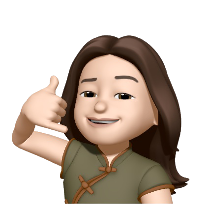
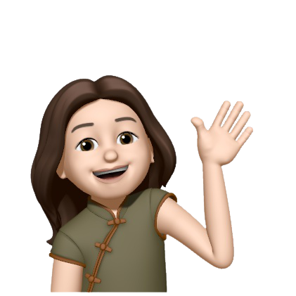

placeholder
Hi, Lindsey Here!
I am a junior majoring in Computer Science and Applied Math at University of Southern California. I am currently interested in learning math (a lot of them!), Statistical learning, Natural Language Processing, and creative writing. Feel free to explore around my website ;)
Last update: Jan.11th 2021

Hey, you wanna know more about me!
I've once read a few psychology papers (for more information,
click here) about the positive social effect of I-sharing (i.e. Believing one shares a subjective experience with another). Specifically, i-sharing would increase conformity, eradicate prejudice towards outgroups and increase interpersonal connectedness. To test out this theory, I leave here a small section that describes a few aspects of my own reality as an experiment to see if you, my reader and probably a stranger to me, would like me more after consuming my stories :)
Life updates:
- Jan. 08 - I am really excited to be one of the CPs for CSCI170 - Discrete Methods in Computer Science at USC
- Finish the research project on named-entity recognition w/ demonstration-based learning. Enjoy the process!
- I am thrilled to annouce that I'll be starting my software engineer internship for summer 2022 at Momentive.ai (former SurveyMonkey)! Super excited for it!
10 Random Facts About me
- My Chinese name is 封欣雨 (Xinyu Feng) and Lindsey is my preferred name
- I love cooking, baking and eating. Actually just finished a great bowl of 螺狮粉 with my bud before writing
down these lines of code.
Do try them out my readers ;) - Finished three seasons of Modern Family over this winter break! It's finatic. Am slowing falling into The Office now, when you are taking 20 unit a semester...
- I know every word to Todokanai Koi. Still remember my days binge playing this game back in High School. Ahh life.
- Speaking of anime stuff, my favorite anime character is Asuka Langley Soryu. Asuka, and the show (the old tv series and the following two movies, not the reboot one!) supports me through some of my hardest times in high school and just life in general.
- Am actually listening to this wonderful song right now. Yorushika saikou!
- Speaking of music, here are a few random songs that I enjoy and you may find interesting: this one, this one, and this one
- I think maybe I do like Math. I guess I do.
- I procrastinate the most when I am pressured ;(
- I really like this line from "On The Road" by Jack Kerouac (hey, was a big fan of Allen Ginsberg back in Senior High...), and I will put them down below:
“Somewhere along the line I knew there'd be girls, visions, everything; somewhere along the line the pearl would be handed to me.”

(626) 353-0419
xinyuf@usc.com
